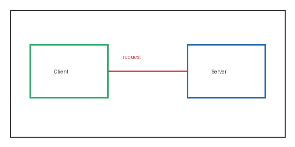

Links Under Test
Reading well is a skill that rewards patience. When the words are set in a comfortable measure, the eye glides without strain, and the mind follows along the line of thought instead of fighting the layout. This first paragraph is long enough to anchor the main content cluster for the extractor to detect reliably every time.
This paragraph carries the active-scheme payloads that the extractor must neutralize. Here is a javascript link, a vbscript link, a data link, a normal relative link, and an absolute https link.
Typography is not decoration; it is the interface between the reader and the writer. A line that is too long forces the eye to hunt for the start of the next row, and a line that is too short fractures the rhythm of reading, so a moderate measure keeps the body substantial enough to extract.
A closing paragraph rounds out the body so that the article remains the dominant column of prose on the page and the extractor locks onto it without ambiguity or any drift at all.
An image with a hostile source should also be neutralized:
while a normal one is kept:

.srcset must not smuggle an unsanitized URL past the src filter:
 a srcset-only image with a hostile first candidate is dropped:
a srcset-only image with a hostile first candidate is dropped:


data: images are allowed (cannot run script), and src on media elements is
filtered too — a comma-bearing data: srcset candidate must survive intact:


An inline SVG (a foreign-namespace element whose lowercase tagName must still be hard-stripped) carrying script/style must not survive: .